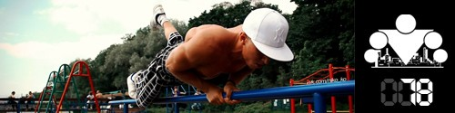

Вот и ещё одна неделя нашего ПРОДВИНУТОГО блока подошла к концу. По традиции давайте подведем итоги того, что мы узнали нового за минувшие 7 дней:
День 71. Продвинутая техника №4
День 72. Количество подтягиваний. Как увеличить?
День 73. Отжимания на брусьях: мышцы и техника
День 74. Как научиться делать выход силой на турнике?
День 75. Классификация упражнений по сложности
День 76. Техника спринтерского бега (основы)
День 77. Лучшая притча о жизни
Сегодня я представлю вам ПОСЛЕДНЮЮ и САМУЮ СЛОЖНУЮ технику ПРОДВИНУТОГО блока.
Продвинутые техники - это способ усложнить и разнообразить программу. Кому хватает нагрузок от стандартной, может ничего в схеме тренировок не менять
Памятка:
Итак, мы приняли во внимание отклики участников предыдущего запуска 100 дневного воркаута и пришли к выводу, что в ПРОДВИНУТОМ блоке должно быть больше разнообразия. Но это должно быть полезное разнообразие, которое не только позволит снизить психологическую усталость от определенной однообразности кругов, но и позволит повысить итоговые результаты всех участников.
Для достижения этих двух целей мы решили расширить понравившееся многим нововведение с демонстрацией новых техник выполнения упражнений с 1 дня (как было в предыдущем запуске) до 7 (то есть до целой недели)!
Перед тем, как непосредственно перейти к демонстрации техники, которую мы выбрали для вас на первой неделе ПРОДВИНУТОГО блока, нам необходимо дать вам несколько ценных указаний:
(1) Ваши круги в рамках ПРОДВИНУТОГО блока будут состоять из ТЕХ ЖЕ упражнений, что и в БАЗОВОМ блоке - подтягивания, приседания, отжимания от пола и выпады. При этом внутри круга вы выполняете все эти упражнения с использованием новой техники. Затем отдыхаете 30-60 секунд (как обычно) и делаете новый круг.
(2) Количество повторений подсказать сложно, поэтому здесь вам придется научиться правильно оценивать свои силы. С нашей стороны мы будем всегда объявлять сложность демонстрируемой техники относительно обычного варианта.
(3) Если в каком-то из кругов вы не сможете выполнить необходимое количество повторений в каком-либо из упражнений, то этот круг считается последним в сегодняшней тренировке. После него сделайте каждое упражнение (подтягивание, отжимание, приседание) по очереди на статическое удержание в точке максимального напряжения:
- для подтягиваний - удерживайтесь в верхней точке,
- для отжиманий - удерживайтесь по середине движения,
- для приседаний - удерживайтесь в положении бедер параллельно земле
- для выпадов - удерживайтесь в нижней точки (колено не касается земли!)
Введение такого ограничения связано в первую очередь с тем, что вы все ещё должны успевать восстанавливаться за 24 часа между тренировками, чтобы тренироваться каждый день. Поэтому если вы вдруг ошиблись с подбором нужного числа повторений (а вероятность этого есть), данное ограничение защитит вас от перетренированности. По крайней мере мы на это рассчитываем =)
(4) Если в какой-то момент вы поймете, что ПРОДВИНУТАЯ нагрузка становится чрезмерной, то вы всегда можете на несколько дней вернуться к обычному стилю выполнения. Вы можете чередовать обычные и продвинутые стили в течение недели. В общем, здесь есть определенный простор для творчества, связанный с тем, что все мы разные, и пока у нас слишком мало статистики по ПРОДВИНУТОМУ блоку, чтобы давать вам однозначные рекомендации!
ТЕХНИКА: ПЛИОМЕТРИЧЕСКИЕ ПОВТОРЕНИЯ
Одним из самых простых способов увеличить нагрузку при работе с собственным весом является добавление взрывной составляющей в ваши упражнения. Сегодня мы познакомим вас с техникой плиометрических повторений, суть которой заключается в том, чтобы увеличить амплитуду движения и увеличить его сложность за счет победы над силой притяжения!
Рассмотрим на примере приседаний: из положения стоя вы приседаете вниз, как обычно, а затем выталкиваете себя ногами вверх, но не просто, чтобы вернуться в исходное положение, а так, чтобы немного "взлететь" над землёй. Аналогично выполняете повторения в отжиманиях от пола, подтягиваниях и выпадах.
Это САМАЯ сложная техника, которая сложнее нестабильных повторений, поэтому рекомендуем начать с самого малого количества (5-10-10-10 или даже 5-5-5-5 или и того меньше).
======> День 79. Тяжелая тренировка (груди, спины, рук, плеч и т.д.)